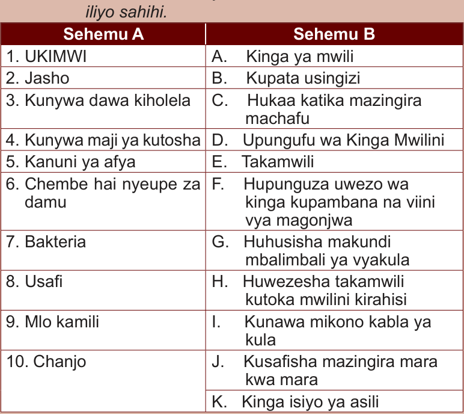

Zoezi la 2
Sehemu A: Oanisha maneno ya Sehemu A na B ili kuunda maana iliyo sahihi.
Sehemu A
Sehemu B
1. UKIMWI
2. Jasho
3. Kunywa dawa kiholela
4. Kunywa maji ya kutosha
5. Kanuni ya afya
6. Chembe hai nyeupe za damu
7. Bakteria
8. Usafi
9. Mlo kamili
10. Chanjo
A. Kinga ya mwili
B. Kupata usingizi
C. Hukaa katika mazingira machafu
D. Upungufu wa Kinga Mwilini
E. Takamwili
F. Hupunguza uwezo wa kinga kupambana na viini vya magonjwa
G. Huhusisha makundi mbalimbali ya vyakula
H. Huwezesha takamwili kutoka mwilini kirahisi
I. Kunawa mikono kabla ya kula
J. Kusafisha mazingira mara kwa mara
K. Kinga isiyo ya asili
1. UKIMWI
2. Jasho
3. Kunywa dawa kiholela
4. Kunywa maji ya kutosha
5. Kanuni ya afya
6. Chembe hai nyeupe za damu
7. Bakteria
8. Usafi
9. Mlo kamili
10. Chanjo
